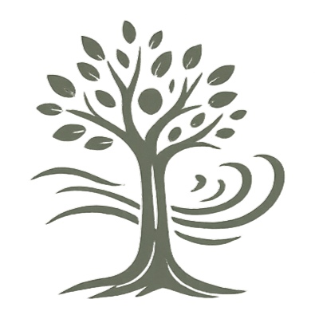
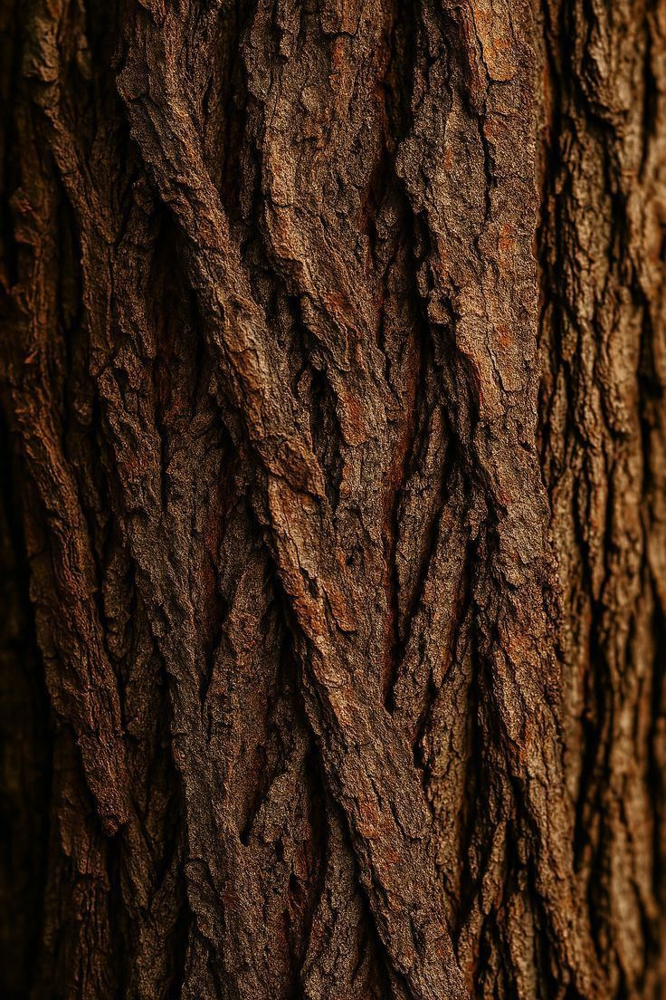
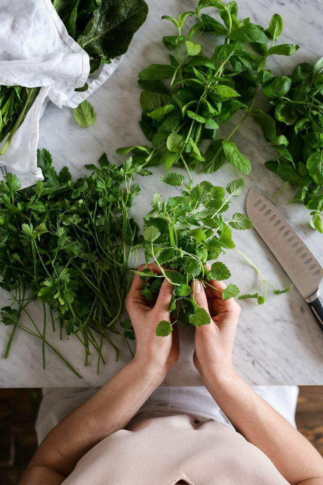
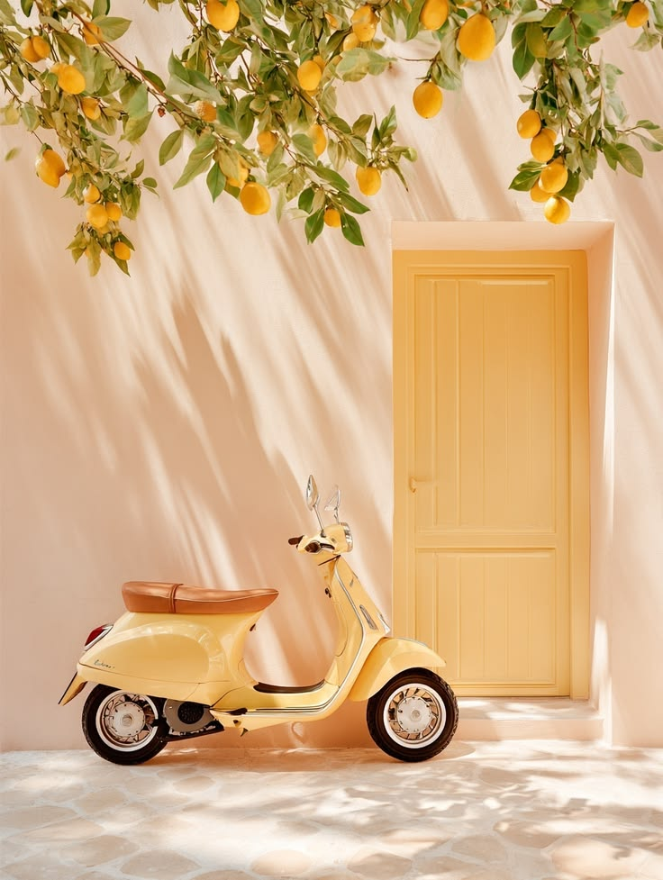

Asmeninis augimas, santykiai, savipagalbos instrukcijos
Balandžio 5, 2026 · 9 min
Patiriantiems tuštumą ir ieškantiems autentiško gyvenimo kelio. Savipagalbos instrukcija.
Gegužės 16, 2025 · 5 min
Užtikrintumas, šaltakraujiškumas, tyla. Ką slepia vyrai? Įžvalgos iš vyriško kolektyvo.

Gegužės 5, 2024 · 2 min
Norint bręsti, o ne kaupti protingas išvadas, teks sustoti. Savipagalbos instrukcija.
Balandžio 2, 2023 · 4 min
Praktiniai žingsniai padedantis nusiraminti. Savipagalbos instrukcija.
Lapkričio 1, 2022 · 6 min
Iš kur atsiranda įsitikinimas „aš blogas" - kaip jį pastebėti ir išsilaisvinti.

Liepos 19, 2022 · 3 min
Kaip darbas savo rankomis padeda grįžti iš galvos į kūną ir gerinti santykius su kitais?

Birželio 8, 2022 · 5 min
Kam ir kodėl svarbu jausti? Apie sukaupto streso pasekmes ir populiarųjį įprotį daug mąstyti.